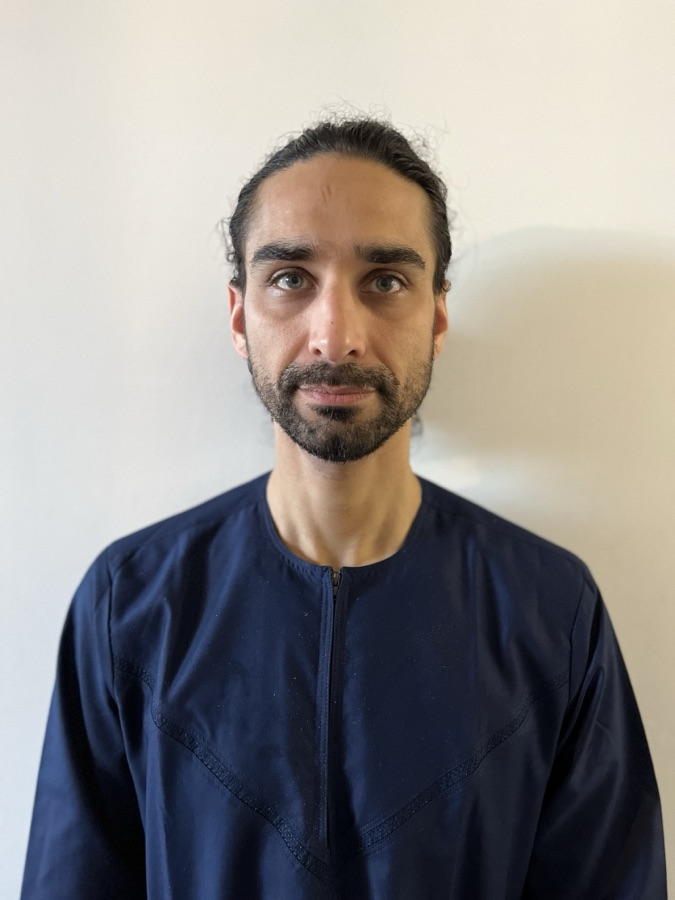

Detroit · Boston · Basra · Beirut · Berlin
Bilal Ghalib
Technologies of connection — between tools, materials and people.

For 20 years I've been learning and teaching by doing — together with people from Silicon Valley to Beirut, Baghdad to Singapore. Alongside my own critical-making practice I teach and facilitate. My mediums are code, electronics, watercolors, poetry, and beyond. I co-founded Bloom, helped start one of Iraq's first hackerspaces, and today I build AI tools that strengthen thinking instead of replacing it.
Explore
Now building
- CursiveAI that strengthens your thinking, then gets out of the way
- SourcedA transparency protocol for AI conversations
- Drift PathsAgentic ocean simulation, ecological data
- wayway.aiSmall AI tools for reading, writing, attention
- BloomTen years of facilitation and social-impact accelerators
Bilal is one of the most creative, thoughtful and inspiring people I have worked with.